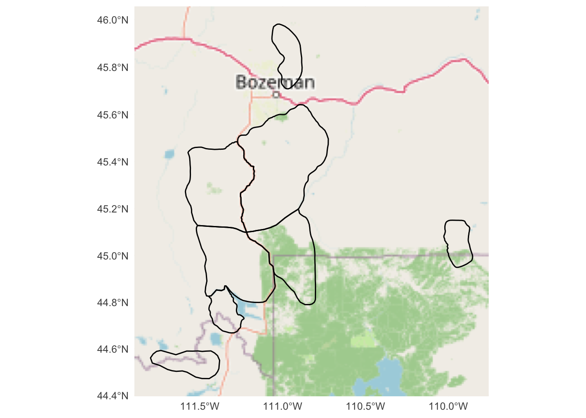
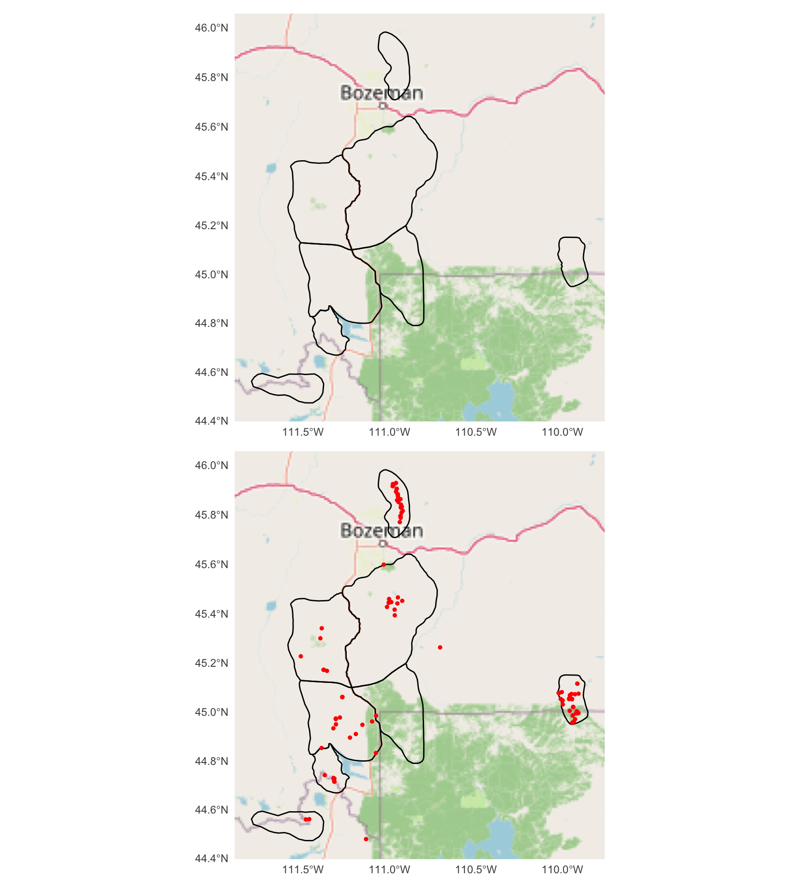
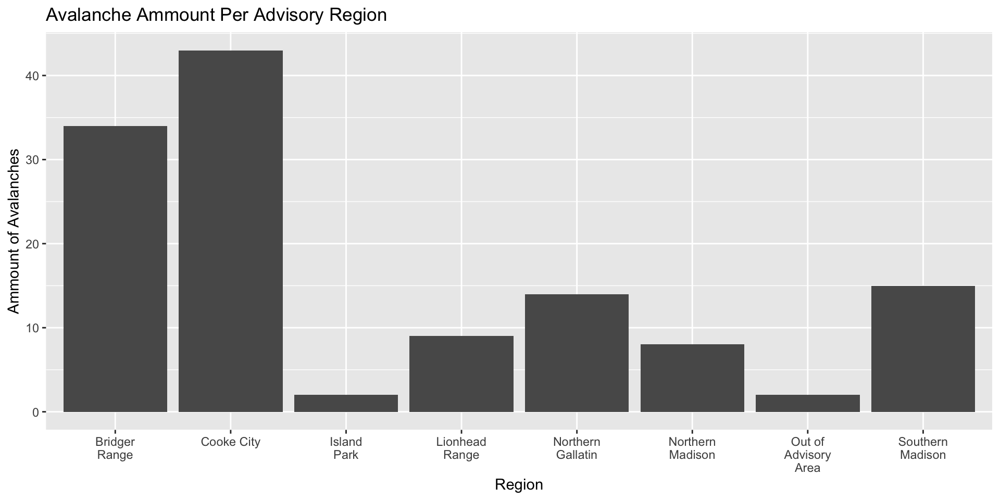
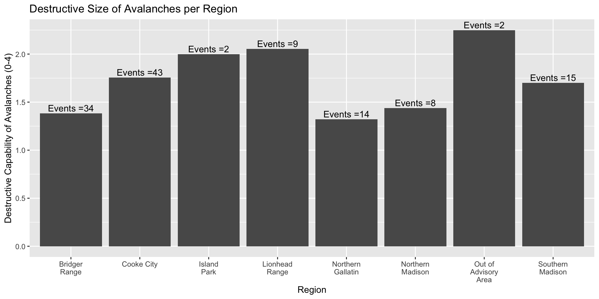
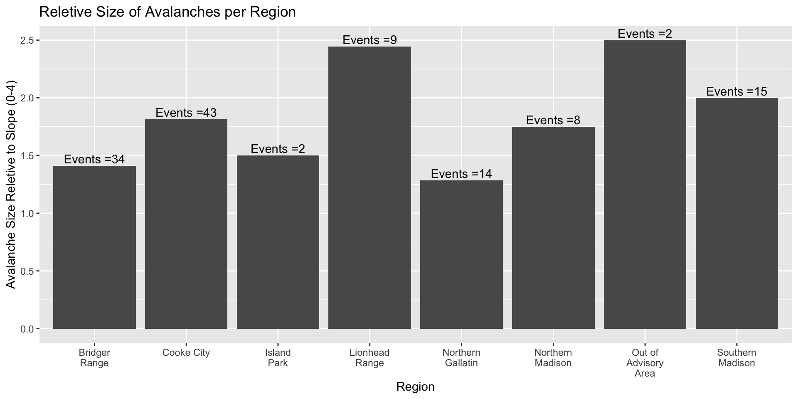

# load libraries and data
# READ .kml
#install.packages("prettymapr")
#install.packages("gt")
library(sf)
library(tidyverse)
library(ggplot2)
library(ggspatial)
library(prettymapr)
library(gt)
library(patchwork)
library(dplyr)
#read in region shapefile recieved from GNFAC
reigons <- suppressMessages(
suppressWarnings(
sf::st_read("GNFAC Polygons ALL.kml", quiet = TRUE)
)
)Avalanche Analysis Tutorial
Spatial and Statistical Analysis of Avalanches Observed by the Gallatin National Forest Avalanche Center (GNFAC)
The GNFAC is the avalanche research and forecasting center for the Gallatin valley in Montana. In order to collect and distribute accurate data, they have split their forecast area into 8 different regions. These regions act independently as they have different characteristics. Each day, a forecast is shared with the public for each region and when avalanche data is collected it is paired with a region. In this tutorial, you will analyse the spatial distribution and behaviors of avalanches in each region of the GNFAC.
Github Repo: https://github.com/zackniedz/Stats_408_Final
Section 1: Preparation
Lets load packages, and clean the data to prepare it for analysis. Use ggplot2 to make graphs and maps and use gt to make nice looking charts. “st_read” is a great way to read in vector data.
Clean the data using the “select” function and delineate which columns you would like to maintain and in what order. Then use the head() function to see the top 5 rows and gt() to make the chart pretty this will populate a chart.
#load GNFAC avalanche data
avy_data <- read.csv("GNFAC_2024-2025_AVY_DATA(Sheet1).csv")
#clean data to contain relevent collumns
avy1<-avy_data%>%
select("Date", "Longitude", "Latitude", "Region","Elevation","Aspect", "Avalanche.Type","D.size","R.size")
avy1 <- na.omit(avy1)
# manke it pretty
head(avy1) %>%
gt() %>%
tab_header(title = "Raw Avalanche Data (GNFAC)")| Raw Avalanche Data (GNFAC) | ||||||||
| Date | Longitude | Latitude | Region | Elevation | Aspect | Avalanche.Type | D.size | R.size |
|---|---|---|---|---|---|---|---|---|
| 5/3/2025 | -110.923 | 45.8156 | Bridger Range | 7800 | E | Wet loose-snow avalanche | 1.5 | 2 |
| 5/1/2025 | -110.930 | 45.8084 | Bridger Range | 8000 | E | Wet loose-snow avalanche | 2.0 | 2 |
| 4/19/2025 | -110.976 | 45.9196 | Bridger Range | 7700 | NE | Soft slab avalanche | 1.0 | 1 |
| 4/19/2025 | -109.928 | 45.0722 | Cooke City | 10200 | NE | Soft slab avalanche | 1.0 | 1 |
| 4/9/2025 | -110.958 | 45.9043 | Bridger Range | 9000 | SE | Soft slab avalanche | 1.0 | 1 |
| 4/7/2025 | -109.938 | 45.0202 | Cooke City | 1000 | SE | Wet loose-snow avalanche | 1.5 | 1 |
Section 2: Map the forecast zones and avalanche events
plot the forecast zones on a map using ggplot and name the map “polygons.” st_transform() allows you to set a CRS with a unique code.
#Make map of shapefile and visualize
#set CRS
reigons <- st_transform(reigons, 4326)
#set plot conditions
pollygons<- ggplot() +
annotation_map_tile(type = "osm") + # basemap
geom_sf(data = reigons, color = "black", linewidth = 0.5, alpha = 0) +
coord_sf() +
theme_minimal()
pollygons
plot the observed avalanche events on the previously made map by creating a new one called “point_map.” the genom_sf() function allows you to put multliple data sources on one map. Then, stack them for on top of each other for analysis using a “/.”
#plot avalanches on map
#georeference the lat and long collumns of the .csv
avy_map <- st_as_sf(avy1,
coords = c("Longitude", "Latitude"),
crs = 4326) # WGS84
# plot the location of the avalanche events over the shapefile
point_map <- ggplot() +
annotation_map_tile(type = "osm") + # basemap
geom_sf(data = reigons, color = "black", linewidth = 0.5, alpha = 0) +
geom_sf(data = avy_map, color = "red", size = 1)+
theme_minimal()
# stack the graphs
pollygons / point_map
Section 3: Make plots of avalanche characteristics per region
The following chunks will make bar graphs of total events per zone
3A) make a plot of total avalanche events per region using ggplot. the count() function totals the amount of events that occur in one region and stores that data under “region_ammt.”
#plot avalanches by region
region_ammt <- avy_map |> count(Region) #count the ammount of avalanches per region
# plot the ammount of avalanches per region
region_plot <- ggplot(region_ammt, aes(
x = Region,
y = n
))+
labs(
title = "Avalanche Ammount Per Advisory Region",
x = "Region",
y = "Ammount of Avalanches"
)+
geom_col()+
#stack x axis titles so they dont overlap
scale_x_discrete(labels = function(x) str_wrap(x, width = 10))
region_plot
3B) Make a chart of average destructive capability (D) of avalanches in each region.
This is very similar to the chart above. we are going to use the mean() function to average the D sizes throughout a region and store that data under D_avg.
Avalanche size measured on the D scale describes the destructive capability of avalanches on a scale of 0 to 4. 0 indicates no destructive capability while size 4 can destroy 10 acres of Forrest and involves about 10,000 tons of snow. The following plot visualizes the average destructive capability (D) of avalanches in each region.
# compare aspect to D-size
D_avg <- avy_map %>% #take the everage destructive size (D.size) for each region
group_by(Region) %>%
summarise(mean_d = mean(D.size, na.rm = TRUE),
n = n()
)
#plot the average destructive size for avalanches in each region
D_plot <- ggplot(D_avg, aes(
x = Region,
y = mean_d
))+
labs(
title = "Destructive Size of Avalanches per Region",
x = "Region",
y = "Destructive Capability of Avalanches (0-4)"
)+
geom_col()+
scale_x_discrete(labels = function(x) str_wrap(x, width = 10))+ #stack titles on the x
geom_text(aes(label = paste0("Events =", n)),
vjust = -0.3)
D_plot
3C) Make a chart of average relative size (R) of avalanches for each region.
We are doing the same thing as we did with the D plot, but with a different column of data, R.size.
Similar to the D scale, the R scale measures the size of an avalanche. R stands for relative and measures the avalanche size relative to the maximum possible size the slope is capable of. R is measured on a scale of 1 to 4; 4 being the largest possible avalanche for a specific slope.
R_avg <- avy_map %>% #take the average destructive size (D.size) for each region
group_by(Region) %>%
summarise(mean_r = mean(R.size, na.rm = TRUE),
n = n()
)
#plot the average destructive size for avalanches in each region
R_plot <- ggplot(R_avg, aes(
x = Region,
y = mean_r
))+
labs(
title = "Reletive Size of Avalanches per Region",
x = "Region",
y = "Avalanche Size Reletive to Slope (0-4)"
)+
geom_col()+
scale_x_discrete(labels = function(x) str_wrap(x, width = 10))+ #stack titles on the x
geom_text(aes(label = paste0("Events =", n)),
vjust = -0.3)
R_plot
Section 4: Make some tables
Here, we are using the gt package to put the data into a table form. we are using the previously made data frames, dropping the geometry column with st_drop_geometry(), then using gt() to make an aesthetic chart and add a title.
#remove geometry collumn
D_avg <- st_drop_geometry(D_avg)
R_avg <- st_drop_geometry(R_avg)
region_ammt <- st_drop_geometry(region_ammt)
# This simply calls a chart created earlier and uses gt() to make an aestetic chart.
D_avg %>%
gt() %>%
tab_header(title = "Average Avalanche Size (D)")| Average Avalanche Size (D) | ||
| Region | mean_d | n |
|---|---|---|
| Bridger Range | 1.382353 | 34 |
| Cooke City | 1.755814 | 43 |
| Island Park | 2.000000 | 2 |
| Lionhead Range | 2.055556 | 9 |
| Northern Gallatin | 1.321429 | 14 |
| Northern Madison | 1.437500 | 8 |
| Out of Advisory Area | 2.250000 | 2 |
| Southern Madison | 1.700000 | 15 |
R_avg %>%
gt() %>%
tab_header(title = "Reletive Average Avalanche Size (R)")| Reletive Average Avalanche Size (R) | ||
| Region | mean_r | n |
|---|---|---|
| Bridger Range | 1.411765 | 34 |
| Cooke City | 1.813953 | 43 |
| Island Park | 1.500000 | 2 |
| Lionhead Range | 2.444444 | 9 |
| Northern Gallatin | 1.285714 | 14 |
| Northern Madison | 1.750000 | 8 |
| Out of Advisory Area | 2.500000 | 2 |
| Southern Madison | 2.000000 | 15 |
region_ammt %>%
gt() %>%
tab_header(title = "Avalanches per region")| Avalanches per region | |
| Region | n |
|---|---|
| Bridger Range | 34 |
| Cooke City | 43 |
| Island Park | 2 |
| Lionhead Range | 9 |
| Northern Gallatin | 14 |
| Northern Madison | 8 |
| Out of Advisory Area | 2 |
| Southern Madison | 15 |
Analysis
There appears to be no correlation between D size and R size. For all of the regions, the D size and R size appear to be very similar. Considerations that might throw off the data would be a lack thereof. For example, notice how “Outside of Advisory Area” and “Island Park” only have two observations that appear to be quite large this may throw off data because those regions may not be as patrolled due to their distance. Furthermore, the large amount of observations in the Bridger and Cook City regions can likely be attested to their increased traffic and their proximity to Bozeman, where the GNFAC offices are.
Reflection
In this project, I pieced together a lot of data I am very interested in. My goal was to compare different factors for each region and visualize the results to see if one region was either higher risk or higher consequence in an avalanche scenario. I also wanted to work with mapping multiple types of data on one map (shapefile and point data). This project is complex, because it combines spatial statistical analysis with quantitative analysis. It also works with avalanches, a quite stochastic event. This project is relevant as I am a snow scientist interested in avalanches and ski patroll. Understanding trends in avalanche behavior is a science in itself and in Montana, very pertinent to recreational and public safety. My biggest stretch fr this project was learning github and formatting they where showing up at random locations in the rendering. I this project, I am most pound of the maps, primarily the point map. I believe the maps and the charts, along with the data cleaning gets my point across effectively and with ease to the consumer.